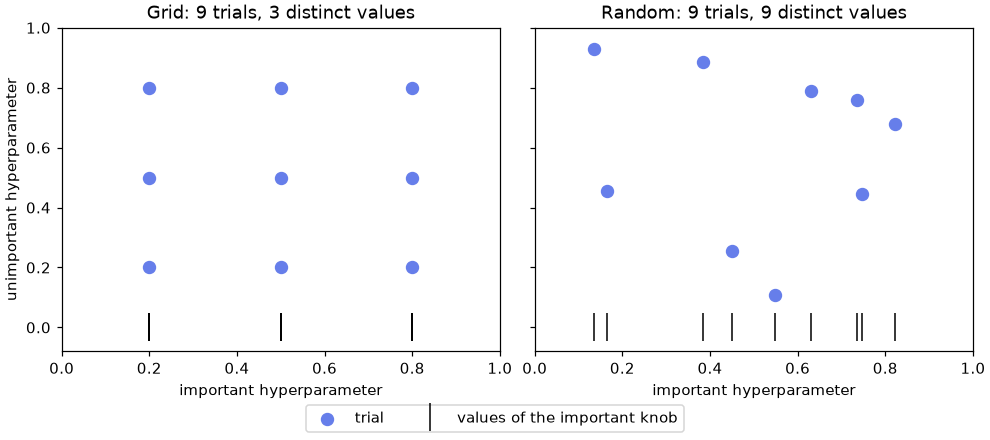
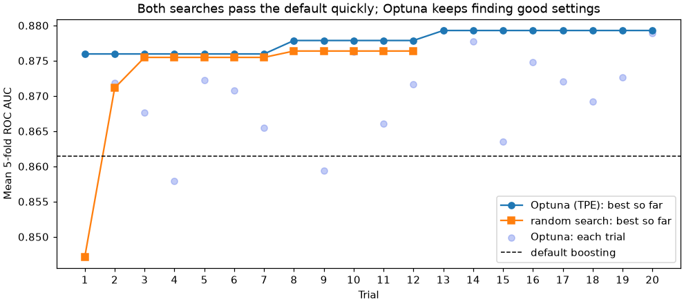

🎛️ Lesson 6.2: Hyperparameter Tuning
Stop guessing at model settings: search for them systematically with four strategies, spend your computing budget where it counts, and report the tuned model's score without fooling yourself.
🎯 Learning Objectives
By the end of this lesson, you will be able to:
- Tune a whole pipeline with
GridSearchCVandRandomizedSearchCV, naming its hyperparameters asstep__param, and readcv_results_ - Choose sensible search ranges (log scales, distributions from
scipy.stats) and explain why random search usually beats a grid of the same size - Speed up a search with successive halving (
HalvingRandomSearchCV) - Run a seeded Optuna study that learns where to search next
- Explain why
best_score_is optimistic, estimate a tuned model honestly with nested cross-validation, and use the test set once
In This Lesson
🧭 Settings You Choose, Settings It Learns
Lesson 6.1 ended with a puzzle. Default gradient boosting lost, narrowly but consistently, to a random forest on Pinecrest's churn data, and its learning curve showed a perfect training score: it was overfitting. Boosting has settings that control exactly that, such as how many leaves each tree may grow and how big each correction step is. The defaults are a reasonable guess for a typical dataset, not a choice made for yours. This lesson is about making that choice with evidence.
| Parameters | Hyperparameters | |
|---|---|---|
| Who sets them | The model, during fit | You, in the constructor, before fit |
| Examples | Logistic regression's coef_; the split points inside each tree | C, max_depth, learning_rate, max_leaf_nodes |
| How to find good values | fit does it | Search: try values, score each with cross-validation, keep the best |
💡 Mental Model: Dialing In a Camp Stove
A camp stove has two knobs: fuel flow and air. Turn either too far and the flame sputters or roars. You cannot calculate the best setting from the manual; you try a setting, boil a pot, time it, and adjust. Every trial costs fuel and minutes, so a smart camper does not try every combination in order. They try a few spread-out settings, notice which knob matters more, and spend the remaining fuel near the best results.
Hyperparameter tuning is the same loop. A trial is a full cross-validation run (several fits), the fuel is computing time, and the search strategy decides which settings get tried. The four strategies in this lesson differ only in how cleverly they spend the fuel.
Three ingredients define every search: the search space (which hyperparameters, which ranges), the budget (how many trials you can afford), and the objective (the cross-validated metric, decided before you start). Start with the setup from Lesson 6.1. This time the pipeline steps get short names of your own, "prep" and "model", which keeps the hyperparameter names short.
import numpy as np
import pandas as pd
import matplotlib.pyplot as plt
from sklearn.model_selection import train_test_split, StratifiedKFold, cross_val_score
from sklearn.compose import ColumnTransformer
from sklearn.pipeline import Pipeline, make_pipeline
from sklearn.impute import SimpleImputer
from sklearn.preprocessing import StandardScaler, OneHotEncoder
from sklearn.ensemble import HistGradientBoostingClassifier
customers = pd.read_csv("data/customers_churn.csv")
numeric = ["tenure_months", "orders_12m", "spend_12m", "avg_order_value", "days_since_last_order",
"returns_12m", "return_rate", "support_tickets_12m", "discount_share", "app_user",
"email_opens_90d"]
categorical = ["home_store", "region", "age_group", "loyalty_tier", "preferred_category"]
X_train, X_test, y_train, y_test = train_test_split(
customers[numeric + categorical], customers["churned"],
test_size=0.25, stratify=customers["churned"], random_state=42)
def make_preprocess():
return ColumnTransformer([
("num", make_pipeline(SimpleImputer(strategy="median"), StandardScaler()), numeric),
("cat", make_pipeline(SimpleImputer(strategy="most_frequent"),
OneHotEncoder(handle_unknown="ignore")), categorical),
])
hgb = Pipeline([("prep", make_preprocess()),
("model", HistGradientBoostingClassifier(random_state=42))])
cv = StratifiedKFold(n_splits=5, shuffle=True, random_state=42)
default_auc = cross_val_score(hgb, X_train, y_train, cv=cv, scoring="roc_auc")
print(f"default boosting, 5-fold AUC: {default_auc.mean():.4f} +/- {default_auc.std():.4f}")
print([name for name in hgb.get_params() if name.startswith("model__")][:8])Output
default boosting, 5-fold AUC: 0.8615 +/- 0.0132
['model__categorical_features', 'model__class_weight', 'model__early_stopping', 'model__interaction_cst', 'model__l2_regularization', 'model__learning_rate', 'model__loss', 'model__max_bins']That is the number to beat. The list shows how the pipeline names its hyperparameters: the step name, two underscores, then the parameter. model__learning_rate is the boosting step's learning rate; prep__num__simpleimputer__strategy would even let you tune the imputer. Every search tool in this lesson uses these names.
🔲 Grid Search
GridSearchCV tries every combination of the values you list. Start small, with logistic regression's single regularization knob C (Lesson 3.2: smaller C means stronger regularization). Regularization strengths matter by orders of magnitude, so the values are spaced on a log scale: each one ten times the last.
from sklearn.linear_model import LogisticRegression
from sklearn.model_selection import GridSearchCV
logit = Pipeline([("prep", make_preprocess()), ("model", LogisticRegression(max_iter=1000))])
logit_search = GridSearchCV(logit, {"model__C": [0.001, 0.01, 0.1, 1, 10, 100]},
cv=cv, scoring="roc_auc")
logit_search.fit(X_train, y_train)
results = pd.DataFrame(logit_search.cv_results_)
print(results[["param_model__C", "mean_test_score", "std_test_score", "rank_test_score"]].round(4).to_string(index=False))Output
param_model__C mean_test_score std_test_score rank_test_score
0.001 0.8267 0.0218 6
0.010 0.8336 0.0240 1
0.100 0.8330 0.0235 2
1.000 0.8324 0.0229 3
10.000 0.8320 0.0228 4
100.000 0.8320 0.0228 5cv_results_ is a dictionary with one entry per setting; as a DataFrame it is the full record of the search. Two lessons here. First, only the very strongest regularization hurts; from 0.01 upward the scores differ by less than their standard deviations. With 4,500 customers and 40-odd features, logistic regression is not overfitting, so C barely matters, exactly what its flat learning curve in Lesson 6.1 predicted. Second, tuning cannot fix a model's basic shape: no value of C lifts logistic regression to boosting's level.
Now a model where settings matter. For boosting, the knobs that control overfitting are the learning_rate (how big each correction step is) and max_leaf_nodes (how complex each tree may be; the default is 31). Three values each make a 3 x 3 grid:
grid = {"model__learning_rate": [0.05, 0.1, 0.2],
"model__max_leaf_nodes": [7, 15, 31]}
grid_search = GridSearchCV(hgb, grid, cv=cv, scoring="roc_auc", n_jobs=-1)
grid_search.fit(X_train, y_train)
n_settings = len(grid_search.cv_results_["params"])
print(f"{n_settings} settings x {cv.get_n_splits()} folds = {n_settings * cv.get_n_splits()} fits, plus 1 refit")
print("best:", grid_search.best_params_)
print(f"best CV AUC: {grid_search.best_score_:.4f}")
grid_table = pd.DataFrame(grid_search.cv_results_).sort_values("rank_test_score")
print(grid_table[["param_model__learning_rate", "param_model__max_leaf_nodes",
"mean_test_score", "std_test_score"]].head(5).round(4).to_string(index=False))Output
9 settings x 5 folds = 45 fits, plus 1 refit
best: {'model__learning_rate': 0.05, 'model__max_leaf_nodes': 7}
best CV AUC: 0.8795
param_model__learning_rate param_model__max_leaf_nodes mean_test_score std_test_score
0.05 7 0.8795 0.0152
0.10 7 0.8773 0.0151
0.05 15 0.8725 0.0165
0.05 31 0.8695 0.0148
0.10 15 0.8682 0.0153Small trees win. Cutting each tree from 31 leaves to 7 tames the overfitting that Lesson 6.1's learning curve showed, and boosting now beats the default by well over a standard error of the fold scores. Notice the cost line: 9 settings meant 45 fits. A grid's cost is the product of the list lengths, so adding a third knob with five values would make it 225 fits, and a fourth would make it more than a thousand. That explosion is the grid's weakness.
💡 What refit Did
By default (refit=True) the search finishes by fitting the best setting on all of X_train. The result is in grid_search.best_estimator_, and grid_search.predict_proba(...) uses it directly, so the search object behaves like a fitted model.
🎲 Random Search
Random search samples each setting from a range or a distribution, for a fixed number of trials. It sounds sloppier than a grid, and usually it does better for the same budget. The reason is that in most problems only one or two hyperparameters really matter, and you rarely know in advance which ones. A grid wastes trials repeating the same few values of the important knob; random sampling gives every trial a fresh value of every knob.
rng = np.random.default_rng(42)
grid_points = np.array([(a, b) for a in [0.2, 0.5, 0.8] for b in [0.2, 0.5, 0.8]])
random_points = rng.uniform(0.05, 0.95, size=(9, 2))
fig, axes = plt.subplots(1, 2, figsize=(9, 4), sharey=True, layout="constrained")
for ax, points, title in [(axes[0], grid_points, "Grid: 9 trials, 3 distinct values"),
(axes[1], random_points, "Random: 9 trials, 9 distinct values")]:
ax.scatter(points[:, 0], points[:, 1], color="#667eea", s=60, label="trial")
ax.plot(points[:, 0], np.zeros(len(points)), "|", color="black", markersize=18,
label="values of the important knob")
ax.set_xlim(0, 1)
ax.set_ylim(-0.08, 1)
ax.set_xlabel("important hyperparameter")
ax.set_title(title)
axes[0].set_ylabel("unimportant hyperparameter")
handles, labels = axes[0].get_legend_handles_labels()
fig.legend(handles, labels, loc="outside lower center", ncols=2)
plt.show()
print("distinct values of the important knob:", len(set(grid_points[:, 0])), "vs", len(set(random_points[:, 0])))Output
distinct values of the important knob: 3 vs 9
RandomizedSearchCV takes distributions instead of lists. loguniform(0.01, 0.3) samples evenly across orders of magnitude (as many values between 0.01 and 0.03 as between 0.1 and 0.3), the right choice for rates and regularization strengths. randint(4, 64) samples whole numbers from 4 to 63. This search also opens two more knobs, min_samples_leaf and l2_regularization, which a grid could not afford.
from scipy.stats import loguniform, randint
from sklearn.model_selection import RandomizedSearchCV
space = {"model__learning_rate": loguniform(0.01, 0.3),
"model__max_leaf_nodes": randint(4, 64),
"model__min_samples_leaf": randint(10, 200),
"model__l2_regularization": loguniform(1e-3, 10)}
random_search = RandomizedSearchCV(hgb, space, n_iter=12, cv=cv, scoring="roc_auc",
random_state=42, n_jobs=-1)
random_search.fit(X_train, y_train)
print(f"best CV AUC: {random_search.best_score_:.4f}")
print({k: round(float(v), 4) if isinstance(v, float) else int(v)
for k, v in random_search.best_params_.items()})Output
best CV AUC: 0.8764
{'model__l2_regularization': 0.0292, 'model__learning_rate': 0.0472, 'model__max_leaf_nodes': 50, 'model__min_samples_leaf': 199}Twelve trials over four knobs land close to the nine-point grid over two, and far above the default. Look at the winning setting: its trees may have up to 50 leaves, but every leaf must hold at least 199 customers and the learning rate is small. That is a different route to the same cure the grid found: trees that cannot chase small groups of unusual customers. Several different settings can be about equally good, which is normal. random_state=42 fixes which settings are drawn, so your search draws the same twelve.
✅ A Good Default Workflow
Start with a random search over generous ranges (log scales for anything that spans orders of magnitude). Look at the results table to see which knobs matter and where the good region is. If you want to, finish with a small grid or a narrower random search inside that region.
✂️ Successive Halving
Most settings in a random search are obviously poor, and you could tell after a quick, cheap look. Successive halving turns that into a tournament. Round 1: every candidate is cross-validated on a small slice of the training rows. Only the best third goes through to round 2, which gives each survivor three times as many rows. Repeat until a few finalists are scored on all the data.
scikit-learn ships it as an experimental feature, so it needs one extra import line that switches it on before you can import the class.
from sklearn.experimental import enable_halving_search_cv # noqa: F401 (switches the feature on)
from sklearn.model_selection import HalvingRandomSearchCV
halving = HalvingRandomSearchCV(hgb, space, n_candidates=27, factor=3, min_resources=500,
cv=cv, scoring="roc_auc", random_state=42, n_jobs=-1)
halving.fit(X_train, y_train)
rounds = pd.DataFrame(halving.cv_results_).groupby("iter").agg(
candidates=("n_resources", "size"), rows_per_candidate=("n_resources", "first"),
best_auc=("mean_test_score", "max"))
print(rounds.round(4))
print(f"best CV AUC: {halving.best_score_:.4f}")Output
candidates rows_per_candidate best_auc
iter
0 27 500 0.8192
1 9 1500 0.8555
2 3 4500 0.8729
best CV AUC: 0.872927 candidates started on 500 rows each; 9 moved on to 1,500 rows; 3 finalists were scored on all 4,500. Count the work in "rows fitted": 27 x 500 + 9 x 1,500 + 3 x 4,500 = 40,500, the same as only 9 full-size candidates, yet it screened 27. The catch is that a setting that needs lots of data to shine can be knocked out early on a small slice, so the winner is good but not guaranteed to be the best of the 27. Halving pays off most when single fits are expensive and you have many candidates to screen.
⚠️ The Resource Does Not Have to Be Rows
resource="n_samples" (the default) grows the training rows. You can instead grow a hyperparameter that controls cost, such as resource="model__max_iter" for boosting rounds; Exercise 4 tries it. HalvingGridSearchCV is the grid version.
🧠 Optuna: Learning Where to Look
Grid and random search never learn from their own results: trial 12 is chosen with no idea how trials 1 to 11 went. Optuna, a popular open-source tuning library, does learn. Its default sampler, TPE (Tree-structured Parzen Estimator), starts with 10 random trials, then splits the trials so far into "good" and "the rest" and proposes new settings that look more like the good ones. It is the camper who notices that low flame worked well and spends the remaining fuel near it.
You write the trial as a function: Optuna passes in a trial object, you ask it for values with suggest_float and suggest_int, and you return the score. The study calls your function as many times as you allow.
import optuna
optuna.logging.set_verbosity(optuna.logging.WARNING) # hide one log line per trial
def objective(trial):
params = {
"model__learning_rate": trial.suggest_float("learning_rate", 0.01, 0.3, log=True),
"model__max_leaf_nodes": trial.suggest_int("max_leaf_nodes", 4, 64),
"model__min_samples_leaf": trial.suggest_int("min_samples_leaf", 10, 200),
"model__l2_regularization": trial.suggest_float("l2_regularization", 1e-3, 10, log=True),
}
model = hgb.set_params(**params)
return cross_val_score(model, X_train, y_train, cv=cv, scoring="roc_auc", n_jobs=-1).mean()
study = optuna.create_study(direction="maximize", sampler=optuna.samplers.TPESampler(seed=42))
study.optimize(objective, n_trials=20)
print(f"best CV AUC: {study.best_value:.4f} (trial number {study.best_trial.number}, counting from 0)")
print({k: round(v, 4) for k, v in study.best_params.items()})Output
best CV AUC: 0.8793 (trial number 12, counting from 0)
{'learning_rate': 0.0609, 'max_leaf_nodes': 5, 'min_samples_leaf': 183, 'l2_regularization': 0.0094}Same search space and metric as the random search, eight more trials, and a better best score, level with the grid's. Whether differences of a few thousandths between these searches are real is a question you now know how to ask (Lesson 6.1): they are far smaller than the fold spread. What they agree on matters more: every search lands well above the default. Note TPESampler(seed=42): without a seed every run explores differently. Even with a seed, running trials in parallel (n_jobs in optimize) makes the order, and so the results, vary; the lesson runs trials one at a time and parallelizes inside each cross-validation instead.
Compare how the two adaptive and non-adaptive searches spent their trials. study.trials_dataframe() holds Optuna's history; the random search's history is its cv_results_, in the order the settings were drawn.
optuna_scores = study.trials_dataframe()["value"]
random_scores = pd.Series(random_search.cv_results_["mean_test_score"])
fig, ax = plt.subplots(figsize=(9, 4), layout="constrained")
ax.plot(range(1, len(optuna_scores) + 1), optuna_scores.cummax(), marker="o", label="Optuna (TPE): best so far")
ax.plot(range(1, len(random_scores) + 1), random_scores.cummax(), marker="s", label="random search: best so far")
ax.scatter(range(1, len(optuna_scores) + 1), optuna_scores, color="#667eea", alpha=0.4, label="Optuna: each trial")
ax.axhline(default_auc.mean(), color="black", linestyle="--", linewidth=1, label="default boosting")
ax.set_xticks(range(1, len(optuna_scores) + 1))
ax.set_xlabel("Trial")
ax.set_ylabel("Mean 5-fold ROC AUC")
ax.set_title("Both searches pass the default quickly; Optuna keeps finding good settings")
ax.legend(loc="lower right")
plt.show()
print("Optuna trials above 0.875:", (optuna_scores > 0.875).sum(), "of", len(optuna_scores))
print("random trials above 0.875:", (random_scores > 0.875).sum(), "of", len(random_scores))Output
Optuna trials above 0.875: 6 of 20
random trials above 0.875: 2 of 12
💡 When Is Optuna Worth It?
When each trial is expensive (big data, deep networks) and the space has several knobs, learning from past trials saves real time. For a quick model with two knobs, a random search is simpler and nearly as good. Optuna also handles conditional spaces (for example "if the model is a forest, tune these; if boosting, tune those") and can stop unpromising trials early with pruning, which matters for neural networks in Module 10.
🔍 Honest Scores After Tuning
Here is the subtle part. best_score_ is the highest of many cross-validated scores, and every one of them carries noise. Picking the maximum of noisy numbers picks, a little, the luckiest noise too. Statisticians call it the winner's curse: the best-looking setting usually looks better than it really is. The more settings you try, the stronger the effect.
The fix is nested cross-validation: treat "run the search, then refit the winner" as one big model-building procedure, and cross-validate that. An outer loop holds out a fold; an inner search tunes on the remaining rows only; the tuned model is then scored on the outer fold, which the search never saw.
In scikit-learn it is a single line, because a search object is itself an estimator: pass it to cross_val_score. To keep it fast, this inner search is small (6 settings, 3 folds) and the outer loop uses 3 folds.
inner = RandomizedSearchCV(hgb, space, n_iter=6, scoring="roc_auc", random_state=42, n_jobs=-1,
cv=StratifiedKFold(n_splits=3, shuffle=True, random_state=0))
outer_cv = StratifiedKFold(n_splits=3, shuffle=True, random_state=1)
nested = cross_val_score(inner, X_train, y_train, cv=outer_cv, scoring="roc_auc")
print("outer-fold AUCs:", nested.round(4))
print(f"nested estimate of the whole tuning procedure: {nested.mean():.4f}")Output
outer-fold AUCs: [0.8609 0.8528 0.8907]
nested estimate of the whole tuning procedure: 0.8681The nested estimate is the honest answer to "how good is a model I get by running this tuning procedure?" It comes out about 0.01 below the searches' best scores. Part of that gap is the winner's curse; part is that each inner search here was smaller and saw only two thirds of the training rows. It is still above the default's 0.8615, so the tuning gain is real, if a little smaller than best_score_ claims. With hundreds of trials or a few hundred rows, the gap between best_score_ and the nested estimate can be much larger, and this is how you would see it.
Finally, the one look at the test set. Build the model with Optuna's best settings, fit it on all the training data, and compare it with the default (scored on the test set for reference, not chosen by it):
from sklearn.base import clone
from sklearn.metrics import roc_auc_score
tuned = clone(hgb).set_params(**{f"model__{k}": v for k, v in study.best_params.items()})
default = clone(hgb).set_params(model__learning_rate=0.1, model__max_leaf_nodes=31,
model__min_samples_leaf=20, model__l2_regularization=0.0)
for name, model in [("default boosting", default), ("tuned boosting", tuned)]:
model.fit(X_train, y_train)
print(f"{name:17s} test AUC {roc_auc_score(y_test, model.predict_proba(X_test)[:, 1]):.3f}")Output
default boosting test AUC 0.860
tuned boosting test AUC 0.874The tuning gain survives contact with unseen customers: the tuned model ranks the test set clearly better than the default, and also passes the forest that won Lesson 6.1. clone makes a fresh, unfitted copy, which matters here because the Optuna objective kept changing hgb's settings in place; the default line resets them explicitly to the library defaults.
⚠️ Tuning Is Not a Substitute for Better Data
A gain of about 0.015 AUC is worth having, and it was cheap. But Lesson 6.1's learning-curve exercise showed that one good feature can do as much. When tuning gains flatten out, stop tuning and look at the features, the data and the problem framing instead.
⚠️ Common Mistakes
1. A Hyperparameter Name Without the Step
GridSearchCV(logit, {"C": [0.1, 1, 10]}, cv=cv).fit(X_train, y_train)Error
ValueError: Invalid parameter 'C' for estimator Pipeline(steps=[('prep',
...
('model', LogisticRegression(max_iter=1000))]). Valid parameters are: ['memory', 'steps', 'transform_input', 'verbose'].The middle of the message (shortened here) prints the whole pipeline. What it means: the search sets parameters on the pipeline, and the pipeline itself has no C. The message ends by listing the pipeline's own parameters. Fix: prefix the step name: "model__C". sorted(logit.get_params()) lists every valid name.
2. A Single Value Instead of a List
GridSearchCV(logit, {"model__C": 1.0}, cv=cv).fit(X_train, y_train)Error
TypeError: Parameter grid for parameter 'model__C' needs to be a list or a numpy array, but got 1.0 (of type float) instead. Single values need to be wrapped in a list with one element.What it means: a grid needs a list of values to try for each name, even if there is only one. You get the same error if you pass a scipy.stats distribution to GridSearchCV: distributions belong to RandomizedSearchCV. Fix: {"model__C": [1.0]}, or switch to the randomized search.
3. Several Metrics but No Refit Choice
GridSearchCV(logit, {"model__C": [0.1, 1]}, cv=cv,
scoring=["roc_auc", "average_precision"]).fit(X_train, y_train)Error
ValueError: For multi-metric scoring, the parameter refit must be set to a scorer key or a callable to refit an estimator with the best parameter setting on the whole data and make the best_* attributes available for that metric. If this is not needed, refit should be set to False explicitly. True was passed.What it means: with two metrics, "best" is ambiguous, so the search refuses to guess which one should choose the final model. Fix: name the deciding metric, refit="average_precision"; both metrics still appear in cv_results_. Exercise 3 does this.
4. A Linear Grid for a Log-Scale Knob
linear = GridSearchCV(logit, {"model__C": [1, 2, 3, 4, 5]}, cv=cv, scoring="roc_auc").fit(X_train, y_train)
print(pd.Series(linear.cv_results_["mean_test_score"], index=[1, 2, 3, 4, 5]).round(4).to_string())Output (no error, and that is the problem)
1 0.8324
2 0.8321
3 0.8321
4 0.8321
5 0.8321What happened: five settings, five fits each, and the scores agree to three decimals. The grid looked like a search but explored almost nothing: from the model's point of view, 1 and 5 are neighbors. The interesting changes in C (and in learning rates and regularization strengths generally) happen across factors of ten. Fix: space such values on a log scale, [0.001, 0.01, 0.1, 1, 10, 100] or np.logspace(-3, 2, 6), or sample them with loguniform.
5. Reporting best_score_ as the Model's Performance
This one cannot be shown with a single error message. best_score_ is the winner of a contest among noisy scores, so it is biased upward (the winner's curse). It is fine for choosing; it is not the number to promise anyone. Report a nested cross-validation estimate, or the score on a test set that played no part in the search.
🛠️ Project: Tune the Retention Model
The care team works from the top 50 customers of a risk-ranked list (Lesson 1.1). Your job: tune gradient boosting for average precision, the metric that rewards a clean top of the list, compare it honestly with the default, count how many of the top 50 test customers each model gets right, and save the winning settings so the model can be rebuilt later. Work in a new notebook called lesson_6_2_project. Allow about 40 minutes.
🛠️ Step 1: Set up and score the default (5 min)
import json
import numpy as np
import pandas as pd
from scipy.stats import loguniform, randint
from sklearn.model_selection import train_test_split, StratifiedKFold, cross_val_score, RandomizedSearchCV
from sklearn.compose import ColumnTransformer
from sklearn.pipeline import Pipeline, make_pipeline
from sklearn.impute import SimpleImputer
from sklearn.preprocessing import StandardScaler, OneHotEncoder
from sklearn.ensemble import HistGradientBoostingClassifier
customers = pd.read_csv("data/customers_churn.csv")
numeric = ["tenure_months", "orders_12m", "spend_12m", "avg_order_value", "days_since_last_order",
"returns_12m", "return_rate", "support_tickets_12m", "discount_share", "app_user",
"email_opens_90d"]
categorical = ["home_store", "region", "age_group", "loyalty_tier", "preferred_category"]
train, test = train_test_split(customers, test_size=0.25, stratify=customers["churned"], random_state=42)
X_train, y_train = train[numeric + categorical], train["churned"]
X_test, y_test = test[numeric + categorical], test["churned"]
preprocess = ColumnTransformer([
("num", make_pipeline(SimpleImputer(strategy="median"), StandardScaler()), numeric),
("cat", make_pipeline(SimpleImputer(strategy="most_frequent"),
OneHotEncoder(handle_unknown="ignore")), categorical),
])
pipe = Pipeline([("prep", preprocess), ("model", HistGradientBoostingClassifier(random_state=42))])
cv = StratifiedKFold(n_splits=5, shuffle=True, random_state=42)
default_ap = cross_val_score(pipe, X_train, y_train, cv=cv, scoring="average_precision")
print(f"default CV average precision: {default_ap.mean():.3f} +/- {default_ap.std():.3f}")Output
default CV average precision: 0.608 +/- 0.043The split keeps whole rows (train, test) so that customer IDs are available for the shortlist in Step 5.
🛠️ Step 2: Define the search space (5 min)
Log scales for the rate and the regularization strength, whole-number ranges for the tree-size knobs. Writing the space down before running anything is part of the discipline: it is your plan.
space = {"model__learning_rate": loguniform(0.01, 0.3),
"model__max_leaf_nodes": randint(4, 64),
"model__min_samples_leaf": randint(10, 200),
"model__l2_regularization": loguniform(1e-3, 10)}
budget = 15
print(f"{budget} settings x {cv.get_n_splits()} folds = {budget * cv.get_n_splits()} fits")Output
15 settings x 5 folds = 75 fits🛠️ Step 3: Run the search (10 min)
This is the lesson's space with the same random_state, so the first 12 settings drawn are the same ones as in the lesson; this time they are judged by average precision, and three more are added.
search = RandomizedSearchCV(pipe, space, n_iter=budget, cv=cv, scoring="average_precision",
random_state=42, n_jobs=-1)
search.fit(X_train, y_train)
best = {k.removeprefix("model__"): round(float(v), 4) if isinstance(v, float) else int(v)
for k, v in search.best_params_.items()}
print(f"best CV average precision: {search.best_score_:.3f}")
print(best)Output
best CV average precision: 0.636
{'l2_regularization': 0.0292, 'learning_rate': 0.0472, 'max_leaf_nodes': 50, 'min_samples_leaf': 199}🛠️ Step 4: Read the leaderboard (5 min)
How many settings are within one standard deviation of the best? If several are, the exact winner matters little; what they have in common matters more.
board = pd.DataFrame(search.cv_results_).sort_values("rank_test_score")
cols = ["param_model__learning_rate", "param_model__max_leaf_nodes", "param_model__min_samples_leaf",
"mean_test_score", "std_test_score"]
print(board[cols].head(5).round(3).to_string(index=False))
close = board["mean_test_score"] >= search.best_score_ - board["std_test_score"].iloc[0]
print(f"settings within one std of the best: {close.sum()} of {len(board)}")Output
param_model__learning_rate param_model__max_leaf_nodes param_model__min_samples_leaf mean_test_score std_test_score
0.047 50 199 0.636 0.037
0.038 53 113 0.633 0.039
0.031 43 161 0.631 0.038
0.057 60 140 0.631 0.037
0.042 57 115 0.631 0.039
settings within one std of the best: 12 of 15🛠️ Step 5: Test once: default versus tuned on the shortlist (10 min)
Fit the default on all training rows (the tuned one is already refitted inside search), then score both on the test set and count real churners among each model's top 50.
from sklearn.metrics import average_precision_score
default_model = pipe.fit(X_train, y_train)
for name, model in [("default", default_model), ("tuned", search)]:
p = model.predict_proba(X_test)[:, 1]
top50 = test.assign(p=p).nlargest(50, "p")
print(f"{name:8s} test AP {average_precision_score(y_test, p):.3f} "
f"top-50 shortlist: {top50['churned'].sum()} real churners")Output
default test AP 0.600 top-50 shortlist: 40 real churners
tuned test AP 0.614 top-50 shortlist: 43 real churnersFor reference, a random list of 50 would reach about 8 churners, and Lesson 1.1's forest reached 41.
🛠️ Step 6: Save the settings (5 min)
Save the tuned settings, the metric and the scores, so that anyone (including you in a month) can rebuild exactly this model. Lesson 12.1 turns this habit into proper experiment tracking.
record = {"model": "HistGradientBoostingClassifier", "random_state": 42,
"metric": "average_precision", "cv": "StratifiedKFold(5, shuffle=True, random_state=42)",
"search": f"RandomizedSearchCV, n_iter={budget}, random_state=42",
"best_params": best, "cv_score": round(search.best_score_, 4),
"default_cv_score": round(default_ap.mean(), 4)}
with open("best_params.json", "w") as f:
json.dump(record, f, indent=2)
with open("best_params.json") as f:
print(json.load(f)["best_params"])Output
{'l2_regularization': 0.0292, 'learning_rate': 0.0472, 'max_leaf_nodes': 50, 'min_samples_leaf': 199}✅ Project Completion Checklist
- The default model's cross-validated average precision is written down before any tuning
- The search space uses log scales for the learning rate and
l2_regularization - The search ran on the training rows only, with
random_state=42for repeatable draws - You checked how many settings were within one standard deviation of the best
- The test set was used once, for both models, after the search finished
best_params.jsonholds the settings, metric, search description and scores
🏋️ Hands-on Exercises
These continue in the project notebook, so pipe, preprocess, cv, search, X_train and y_train already exist.
🏋️ Exercise 1: Which Knob Mattered?
Using the project search's cv_results_, compute the correlation between each numeric hyperparameter and mean_test_score across the 15 settings. Which knob is most strongly linked to the score, and in which direction?
💡 Hint
The param_... columns hold Python objects; convert them with .astype(float) before calling .corr().
✅ Solution
res = pd.DataFrame(search.cv_results_)
knobs = ["learning_rate", "max_leaf_nodes", "min_samples_leaf", "l2_regularization"]
for knob in knobs:
r = res[f"param_model__{knob}"].astype(float).corr(res["mean_test_score"])
print(f"{knob:18s} correlation with score: {r:+.2f}")Output
learning_rate correlation with score: -0.77
max_leaf_nodes correlation with score: +0.27
min_samples_leaf correlation with score: +0.54
l2_regularization correlation with score: +0.18The learning rate is most strongly linked to the score, and negatively: slower learning does better. Larger leaves (min_samples_leaf) help too. Both are ways of making each tree's correction smaller and less specific, which fits the overfitting diagnosis from Lesson 6.1. With only 15 settings these correlations are rough (and a log-scale knob is better judged on its log), but this kind of quick look tells you where to focus a second, narrower search.
🏋️ Exercise 2: Grid Search for Nearest Neighbors
Tune a KNeighborsClassifier in a pipeline with the project's preprocess: n_neighbors in [10, 25, 50, 100] and weights in ["uniform", "distance"], scored by average precision with cv. Print the best setting and its score. Does tuning bring nearest neighbors anywhere near boosting?
💡 Hint
Name the steps "prep" and "model" so the grid keys are model__n_neighbors and model__weights. Wrap the shared preprocess in clone() so this pipeline gets its own copy.
✅ Solution
from sklearn.base import clone
from sklearn.model_selection import GridSearchCV
from sklearn.neighbors import KNeighborsClassifier
knn = Pipeline([("prep", clone(preprocess)), ("model", KNeighborsClassifier())])
knn_search = GridSearchCV(knn, {"model__n_neighbors": [10, 25, 50, 100],
"model__weights": ["uniform", "distance"]},
cv=cv, scoring="average_precision", n_jobs=-1).fit(X_train, y_train)
print(knn_search.best_params_, round(knn_search.best_score_, 3))Output
{'model__n_neighbors': 25, 'model__weights': 'distance'} 0.54Tuning helps nearest neighbors a little, but its best is still well below tuned boosting. Tuning moves a model toward its own ceiling; it does not change which family has the higher ceiling. That is why model selection (Lesson 6.1) and tuning go together.
🏋️ Exercise 3: Two Metrics, One Decider
Fix common mistake 3: run a GridSearchCV over logistic regression's C in [0.01, 0.1, 1, 10] with scoring=["roc_auc", "average_precision"] and refit="average_precision". Print, for each C, both mean scores, and print best_params_.
💡 Hint
With several metrics, cv_results_ has columns named mean_test_roc_auc and mean_test_average_precision.
✅ Solution
from sklearn.linear_model import LogisticRegression
logit = Pipeline([("prep", clone(preprocess)), ("model", LogisticRegression(max_iter=1000))])
two = GridSearchCV(logit, {"model__C": [0.01, 0.1, 1, 10]}, cv=cv,
scoring=["roc_auc", "average_precision"], refit="average_precision").fit(X_train, y_train)
table = pd.DataFrame(two.cv_results_)[["param_model__C", "mean_test_roc_auc", "mean_test_average_precision"]]
print(table.round(4).to_string(index=False))
print("chosen by average precision:", two.best_params_)Output
param_model__C mean_test_roc_auc mean_test_average_precision
0.01 0.8336 0.5278
0.10 0.8330 0.5296
1.00 0.8324 0.5282
10.00 0.8320 0.5279
chosen by average precision: {'model__C': 0.1}Both metrics are recorded, and refit says which one decides. Here the two even disagree: AUC prefers C=0.01 and average precision prefers C=0.1. The differences are tiny (logistic regression is not overfitting), but when the metrics disagree by more, this is how you make the business metric win.
🏋️ Exercise 4: Halving Over Boosting Rounds (Stretch)
Successive halving can grow a hyperparameter instead of the rows. Run a HalvingGridSearchCV over model__learning_rate in [0.03, 0.1, 0.3] and model__max_leaf_nodes in [4, 8, 16], with resource="model__max_iter", min_resources=20, max_resources=180, factor=3 and the project's cv, scored by average precision. Print the rounds (candidates and boosting rounds per candidate) and the winner.
💡 Hint
Remember the experimental import. In cv_results_, the n_resources column holds the number of boosting rounds each candidate got in that round.
✅ Solution
from sklearn.experimental import enable_halving_search_cv # noqa: F401
from sklearn.model_selection import HalvingGridSearchCV
rounds_search = HalvingGridSearchCV(
pipe, {"model__learning_rate": [0.03, 0.1, 0.3], "model__max_leaf_nodes": [4, 8, 16]},
resource="model__max_iter", min_resources=20, max_resources=180, factor=3,
cv=cv, scoring="average_precision", n_jobs=-1).fit(X_train, y_train)
r = pd.DataFrame(rounds_search.cv_results_)
print(r.groupby("iter").agg(candidates=("n_resources", "size"), boosting_rounds=("n_resources", "first")))
print(rounds_search.best_params_, round(rounds_search.best_score_, 3))Output
candidates boosting_rounds
iter
0 9 20
1 3 60
2 1 180
{'model__learning_rate': 0.1, 'model__max_leaf_nodes': 8, 'model__max_iter': 180} 0.613Nine settings got 20 boosting rounds each, the best three got 60, and the finalist got 180. Short runs are a fair preview for boosting because early rounds already show whether a learning rate and tree size are sensible. Notice the bias, though: a small learning rate needs many rounds to shine, so it can be knocked out early. Halving is a speed tool, not a guarantee.
🎯 Quick Quiz
🎯 Check Your Understanding
Question 1: A GridSearchCV uses this grid with cv=5. How many fits does it run, not counting the final refit?
from sklearn.model_selection import ParameterGrid
quiz_grid = {"model__C": [0.01, 0.1, 1, 10], "model__class_weight": [None, "balanced"]}
print(len(ParameterGrid(quiz_grid)) * 5)Question 2: Why is a search's best_score_ usually a little optimistic?
Question 3: Two hyperparameters are tuned with 9 trials, and only the first one really affects the score. Why does random search tend to beat a 3 x 3 grid?
Question 4: What happens in the first round of HalvingRandomSearchCV with factor=3?
Question 5: A pipeline is built as Pipeline([("prep", preprocess), ("model", HistGradientBoostingClassifier())]). Which key tunes the boosting learning rate in a search?
❓ Common Questions at This Stage
Which strategy should I reach for first?
A random search over generous ranges, with a budget you can afford (often 20 to 60 trials). Use a grid when there are only one or two knobs with a handful of meaningful values. Add successive halving when single fits are slow and you want to screen many candidates. Reach for Optuna when trials are expensive, the space has many or conditional knobs, or you want pruning.
How many trials are enough?
Watch the best-so-far curve. When it has been flat for a third of your trials, more trials are unlikely to pay off. A classic rule of thumb from the random-search literature: 60 random trials have a 95% chance of landing in the best 5% of the space, whatever its size.
Should I tune the decision threshold too?
The threshold that turns a probability into a yes or no is a separate, later decision, made for the business cost of each kind of error (Lesson 1.4). Tune the model for a ranking metric first; then pick the threshold, for example with TunedThresholdClassifierCV, on top of the tuned model.
Is it worth tuning preprocessing settings, like the imputer strategy?
Sometimes, and it is free to try because the pipeline exposes them (prep__num__simpleimputer__strategy). On this data the choice barely matters because few values are missing. Feature choices that change what the model can see, such as a recency threshold, usually matter much more than preprocessing switches.
What about AutoML tools that tune everything for me?
They automate exactly this lesson: a search over models and settings, with cross-validation. They are useful, and they are only as honest as their evaluation, so the habits here (fixed metric, untouched test set, nested estimates) still apply. The AutoML reading in the Going Further section looks at them.
🌟 Going Further: Bonus Challenge
Tune the random forest from Lesson 6.1 with Optuna (n_estimators 100 to 400, max_features 0.2 to 1.0, min_samples_leaf 1 to 30) for 15 trials, scored by ROC AUC. Then put tuned boosting and tuned forest through Lesson 6.1's paired comparison on identical folds. Does tuning change which family wins, and is the gap bigger than the noise?
📓 Learning Journal
Take five minutes to write in your learning journal (the journal.md file you started in Lesson 0.1, or a paper notebook). Jot down:
- Key concepts you learned today
- Techniques that clicked (and the ones that have not, yet)
- Questions or confusion to come back to
- Ideas to try on your own
- Progress and feelings: how did this lesson go for you?
✍️ This lesson's prompt: Write down three numbers from today: the default model's cross-validated score, the best tuned score, and the nested or test score. Explain to an imagined manager, in two or three sentences, why the middle number is not the one to promise. Then describe the camp stove analogy for one of the four search strategies.
📝 Lesson Summary
🎓 Key Takeaways
- Hyperparameters are chosen by you before
fit; tuning searches for good ones with cross-validation on the training data - Searches work on whole pipelines; keys are
step__param, andget_params()lists them GridSearchCVtries every combination; its cost is the product of the list lengthsRandomizedSearchCVsamples from distributions (loguniform,randint) and usually beats a grid of the same size- Successive halving screens many candidates cheaply on a growing resource, at the risk of dropping slow starters
- Optuna's TPE sampler learns from past trials; seed it, and run trials sequentially for repeatable results
best_score_is optimistic (the winner's curse): report a nested cross-validation estimate or a one-time test score- On Pinecrest churn, smaller trees fixed boosting's overfitting and lifted it past the forest; tuning cannot lift a weaker model family to a stronger one's level
🏆 What You've Accomplished
- You ran all four major tuning strategies on the same problem and compared what each one cost
- You turned Lesson 6.1's overfitting diagnosis into a measurable improvement
- You estimated a tuned model honestly with nested cross-validation
- You tuned the retention model for the business metric, checked it on the shortlist, and saved its settings for later
🔭 Looking Ahead
In Lesson 7.1: Interpreting Models you will open up a gradient-boosting churn model and ask what it learned: which features drive its predictions, how a prediction changes as one feature changes, and how to tell those descriptions of the model apart from claims about cause and effect.
📋 Before the Next Lesson
- Keep
best_params.jsonand your project notebook: the Lesson 13.1 case study tunes a churn booster the same way, and the file is a record of your settings for your own capstone. - Rerun the project search with
n_iter=30. Does the best score move by more than one standard deviation? Write down what you conclude about the budget. - Predict which two features a churn booster leans on most. Lesson 7.1 will tell you if you were right.
🌱 Encouragement for the Journey
You just did what separates a careful practitioner from a button-pusher: you tuned a model, measured the gain, and refused to oversell it. Tuning can feel like a slot machine at first, pulling levers and hoping for a higher number. Now you know how to spend a budget deliberately, read what the search tells you about the data, and report a number you can stand behind. Module 7 builds directly on this: a model worth explaining is a model you can trust.